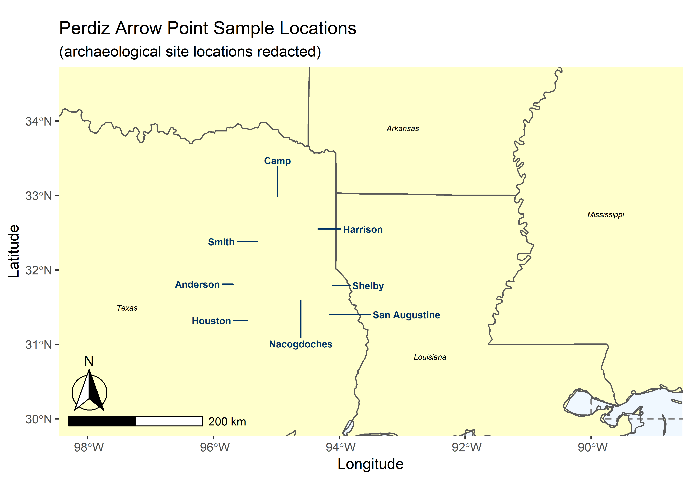

Chapter 2 Spatial
# load packages
library(ggplot2)
library(sf)## Linking to GEOS 3.8.0, GDAL 3.0.4, PROJ 6.3.1library(rnaturalearth)
library(rnaturalearthdata)
library(ggrepel)
library(ggspatial)
library(maps)
library(tools)
# build map
world <- ne_countries(scale = "medium",
returnclass = "sf")
class(world)## [1] "sf" "data.frame"states <- st_as_sf(map("state",
plot = FALSE,
fill = TRUE))
head(states)## Simple feature collection with 6 features and 1 field
## geometry type: MULTIPOLYGON
## dimension: XY
## bbox: xmin: -124.3834 ymin: 30.24071 xmax: -71.78015 ymax: 42.04937
## geographic CRS: WGS 84
## ID geom
## 1 alabama MULTIPOLYGON (((-87.46201 3...
## 2 arizona MULTIPOLYGON (((-114.6374 3...
## 3 arkansas MULTIPOLYGON (((-94.05103 3...
## 4 california MULTIPOLYGON (((-120.006 42...
## 5 colorado MULTIPOLYGON (((-102.0552 4...
## 6 connecticut MULTIPOLYGON (((-73.49902 4...states <- cbind(states,
st_coordinates(st_centroid(states)))
states$ID <- toTitleCase(states$ID)
head(states)## Simple feature collection with 6 features and 3 fields
## geometry type: MULTIPOLYGON
## dimension: XY
## bbox: xmin: -124.3834 ymin: 30.24071 xmax: -71.78015 ymax: 42.04937
## geographic CRS: WGS 84
## ID X Y geom
## 1 Alabama -86.83042 32.80316 MULTIPOLYGON (((-87.46201 3...
## 2 Arizona -111.66786 34.30060 MULTIPOLYGON (((-114.6374 3...
## 3 Arkansas -92.44013 34.90418 MULTIPOLYGON (((-94.05103 3...
## 4 California -119.60154 37.26901 MULTIPOLYGON (((-120.006 42...
## 5 Colorado -105.55251 38.99797 MULTIPOLYGON (((-102.0552 4...
## 6 Connecticut -72.72598 41.62566 MULTIPOLYGON (((-73.49902 4...archcentroids <- data.frame(arch = c("Anderson","Camp","Harrison","Houston","Nacogdoches","San Augustine","Smith","Shelby"),
lat = c(31.81, 32.97, 32.55, 31.32, 31.61, 31.4, 32.38, 31.79),
lng = c(-95.65, -94.98, -94.37, -95.43, -94.61, -94.18, -95.27, -94.14))
states$nudge_x <- -0.55
states$nudge_x[states$ID == "Texas"] <- 2
states$nudge_x[states$ID == "Mississippi"] <- -0.1
states$nudge_y <- -0.01
states$nudge_y[states$ID == "Louisiana"] <- -0.25
states$nudge_y[states$ID == "Arkansas"] <- -1
# plot map
ggplot(data = world) +
geom_sf(fill = "#FFFFCC") +
geom_sf(data = states,
fill = NA) +
geom_text(data = states,
aes(X, Y, label = ID),
nudge_x = states$nudge_x,
nudge_y = states$nudge_y,
fontface = "italic", size = 2) +
geom_text_repel(data = archcentroids, aes(x = lng, y = lat, label = arch),
fontface = "bold",
nudge_x = c(-0.6,0,0.75,-0.6,0,1.25,-0.6,0.6),
nudge_y = c(0,0.5,0,0,-0.6,0,0,0),
color = "#003366",
size = 2.5) +
coord_sf(xlim = c(-98, -89),
ylim = c(30, 34.5),
expand = TRUE) +
ggtitle("Perdiz Arrow Point Sample Locations",
subtitle = "(archaeological site locations redacted)") +
annotation_scale(location = "bl",
width_hint = 0.3) +
annotation_north_arrow(location = "bl",
which_north = "true",
pad_x = unit(0.01, "in"),
pad_y = unit(0.2, "in"),
style = north_arrow_fancy_orienteering) +
theme(panel.grid.major = element_line(color = gray(0.5),
linetype = "dashed",
size = 0.5),
panel.background = element_rect(fill = "aliceblue")) +
labs(x = "Longitude", y = "Latitude")